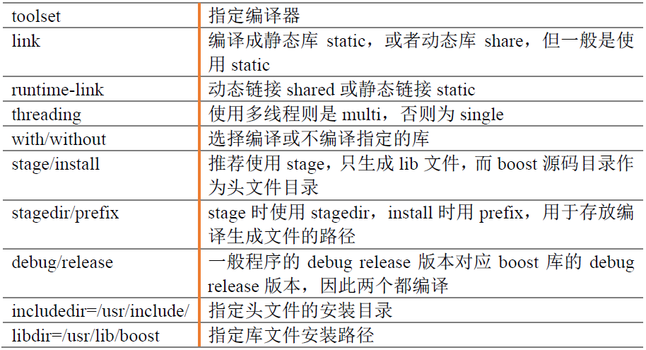

<!DOCTYPE HTML>
<html lang="zh-CN">
<head><meta name="generator" content="Hexo 3.8.0">
    <!--Setting-->
    <meta charset="UTF-8">
    <meta name="viewport" content="width=device-width, user-scalable=no, initial-scale=1.0, maximum-scale=1.0, minimum-scale=1.0">
    <meta http-equiv="X-UA-Compatible" content="IE=Edge,chrome=1">
    <meta http-equiv="Cache-Control" content="no-siteapp">
    <meta http-equiv="Cache-Control" content="no-transform">
    <meta name="renderer" content="webkit|ie-comp|ie-stand">
    <meta name="apple-mobile-web-app-capable" content="我的博客 - blog">
    <meta name="apple-mobile-web-app-status-bar-style" content="black">
    <meta name="format-detection" content="telephone=no,email=no,adress=no">
    <meta name="browsermode" content="application">
    <meta name="screen-orientation" content="portrait">
    <link rel="dns-prefetch" href="https://lives.xtcgch.ink">
    <!--SEO-->

<meta name="description" content="脑容量不够，笔记来凑">


<meta name="robots" content="all">
<meta name="google" content="all">
<meta name="googlebot" content="all">
<meta name="verify" content="all">
    <!--Title-->


<title>【原理】Centos7下编译boost | 我的博客 - blog</title>


    <link rel="alternate" href="/atom.xml" title="我的博客 - blog" type="application/atom+xml">


    <link rel="icon" href="https://blog.xtcgch.ink/img/background/海绵宝宝.ico">

    


<link rel="stylesheet" href="/css/bootstrap.min.css?rev=3.3.7">
<link rel="stylesheet" href="/css/font-awesome.min.css?rev=4.5.0">
<link rel="stylesheet" href="/css/style.css?rev=@@hash">


    


    

</head>

</html>
<!--[if lte IE 8]>
<style>
    html{ font-size: 1em }
</style>
<![endif]-->
<!--[if lte IE 9]>
<div style="ie">你使用的浏览器版本过低，为了你更好的阅读体验，请更新浏览器的版本或者使用其他现代浏览器，比如Chrome、Firefox、Safari等。</div>
<![endif]-->

<body>
    <header class="main-header" style="background-image:url(https://blog.xtcgch.ink/img/head-bg.jpg)">
    <div class="main-header-box">
        <a class="header-avatar" href="/" title="unistd68">
            
        </a>
        <div class="branding">
        	<!--<h2 class="text-hide">Snippet主题,从未如此简单有趣</h2>-->
            
                <h2> 脑容量不够，笔记来凑 </h2>
            
    	</div>
    </div>
</header>
    <nav class="main-navigation">
    <div class="container">
        <div class="row">
            <div class="col-sm-12">
                <div class="navbar-header"><span class="nav-toggle-button collapsed pull-right" data-toggle="collapse" data-target="#main-menu" id="mnav">
                    <span class="sr-only"></span>
                        <i class="fa fa-bars"></i>
                    </span>
                    <a class="navbar-brand" href="https://lives.xtcgch.ink">我的博客 - blog</a>
                </div>
                <div class="collapse navbar-collapse" id="main-menu">
                    <ul class="menu">
                        
                            <li role="presentation" class="text-center">
                                <a href="https://blog.xtcgch.ink/"><i class="fa "></i>主页</a>
                            </li>
                        
                            <li role="presentation" class="text-center">
                                <a href="https://blog.xtcgch.ink/categories/原理/"><i class="fa "></i>原理</a>
                            </li>
                        
                            <li role="presentation" class="text-center">
                                <a href="https://blog.xtcgch.ink/categories/代码/"><i class="fa "></i>代码</a>
                            </li>
                        
                            <li role="presentation" class="text-center">
                                <a href="https://blog.xtcgch.ink/categories/开源/"><i class="fa "></i>开源</a>
                            </li>
                        
                            <li role="presentation" class="text-center">
                                <a href="https://blog.xtcgch.ink/categories/面试/"><i class="fa "></i>面试</a>
                            </li>
                        
                            <li role="presentation" class="text-center">
                                <a href="https://blog.xtcgch.ink/categories/其他/"><i class="fa "></i>其他</a>
                            </li>
                        
                            <li role="presentation" class="text-center">
                                <a href="https://blog.xtcgch.ink/archives/"><i class="fa "></i>时间轴</a>
                            </li>
                        
                    </ul>
                </div>
            </div>
        </div>
    </div>
</nav>
    <section class="content-wrap">
        <div class="container">
            <div class="row">
                <main class="col-md-8 main-content m-post">
                    <p id="process"></p>
<article class="post">
    <div class="post-head">
        <h1 id="【原理】Centos7下编译boost">
            
	            【原理】Centos7下编译boost
            
        </h1>
        <div class="post-meta">
    
    
    <span class="categories-meta fa-wrap">
        <i class="fa fa-folder-open-o"></i>
        <a href="https://blog.xtcgch.ink/categories/原理">
            原理
        </a>
    </span>
    

    
    <span class="fa-wrap">
        <i class="fa fa-tags"></i>
        <span class="tags-meta">
            
                
                    <a href="https://blog.xtcgch.ink/tags/C++" title="C++">
                        C++
                    </a>
                
                    <a href="https://blog.xtcgch.ink/tags/CENTOS" title="CENTOS">
                        CENTOS
                    </a>
                
            
        </span>
    </span>
    

    
        
        <span class="fa-wrap">
            <i class="fa fa-clock-o"></i>
            <span class="date-meta">2019/01/08</span>
        </span>
        
    
</div>

            
            
            <p class="fa fa-exclamation-triangle warning">
                本文于<strong>1000</strong>天之前发表，文中内容可能已经过时。
            </p>
        
    </div>
    
    <div class="post-body post-content">
        <p><strong>摘要：</strong>新手入门，保持更新！</p>
<a id="more"></a>
<hr>
<h2 id="1、脑图"><a href="#1、脑图" class="headerlink" title="1、脑图"></a>1、脑图</h2><p></p>
<hr>
<h2 id="2、boost的下载-amp-解压"><a href="#2、boost的下载-amp-解压" class="headerlink" title="2、boost的下载&amp;解压"></a>2、boost的下载&amp;解压</h2><ul>
<li><a href="https://www.boost.org/" target="_blank" rel="noopener">官网</a>：<a href="https://www.boost.org/" target="_blank" rel="noopener">https://www.boost.org/</a></li>
<li>下载centos版本，如boost_1_69_0.tar.gz</li>
<li>解压：tar -zxvf boost_1_69_0.tar.gz</li>
</ul>
<hr>
<h2 id="3、执行bootstrap-sh"><a href="#3、执行bootstrap-sh" class="headerlink" title="3、执行bootstrap.sh"></a>3、执行bootstrap.sh</h2><figure class="highlight plain"><table><tr><td class="gutter"><pre><span class="line">1</span><br><span class="line">2</span><br></pre></td><td class="code"><pre><span class="line">cd boost_1_69_0</span><br><span class="line">./bootstrap.sh</span><br></pre></td></tr></table></figure>
<hr>
<h2 id="4、编译：-b2-参数"><a href="#4、编译：-b2-参数" class="headerlink" title="4、编译：./b2 参数"></a>4、编译：./b2 参数</h2><p>这时没有说编译安装，是因为在非root账户下，编译安装过程中产生的各种库文件放不进去/usr/local/目录下。</p>
<p>默认的编译参数保存在project-config.jam下，可用vim自己查看。</p>
<p>./b2有诸多的参数可以选择，如下（./b2 –help）：</p>
<p></p>
<p>先使用比较简单的参数：<br><figure class="highlight plain"><table><tr><td class="gutter"><pre><span class="line">1</span><br></pre></td><td class="code"><pre><span class="line">./b2 --without-python stage debug</span><br></pre></td></tr></table></figure></p>
<p>编译时间会比较久，编译成功后会生成boost目录（头文件）、stage/lib目录（动态库及静态库）。</p>
<hr>
<h2 id="5、头文件及库文件拷贝"><a href="#5、头文件及库文件拷贝" class="headerlink" title="5、头文件及库文件拷贝"></a>5、头文件及库文件拷贝</h2><p>将编译产生的boost目录拷贝至/usr/include/，将stage/lib/下的所有文件拷贝至/usr/lib64/下，如下：<br><figure class="highlight plain"><table><tr><td class="gutter"><pre><span class="line">1</span><br><span class="line">2</span><br></pre></td><td class="code"><pre><span class="line">sudo cp -rf boost /usr/include</span><br><span class="line">sudo cp -rf stage/lib/* /usr/lib64</span><br></pre></td></tr></table></figure></p>
<hr>
<h2 id="6、测试"><a href="#6、测试" class="headerlink" title="6、测试"></a>6、测试</h2><p>测试文件test.cpp:</p>
<figure class="highlight plain"><table><tr><td class="gutter"><pre><span class="line">1</span><br><span class="line">2</span><br><span class="line">3</span><br><span class="line">4</span><br><span class="line">5</span><br><span class="line">6</span><br><span class="line">7</span><br><span class="line">8</span><br><span class="line">9</span><br><span class="line">10</span><br><span class="line">11</span><br><span class="line">12</span><br><span class="line">13</span><br><span class="line">14</span><br><span class="line">15</span><br><span class="line">16</span><br><span class="line">17</span><br><span class="line">18</span><br><span class="line">19</span><br><span class="line">20</span><br><span class="line">21</span><br><span class="line">22</span><br><span class="line">23</span><br><span class="line">24</span><br><span class="line">25</span><br></pre></td><td class="code"><pre><span class="line">#include &lt;iostream&gt;</span><br><span class="line">#include &lt;string&gt;</span><br><span class="line">#include &lt;boost/regex.hpp&gt;</span><br><span class="line"></span><br><span class="line">int main()</span><br><span class="line">&#123;</span><br><span class="line">    std::string str = &quot;192.168.1.1&quot;;</span><br><span class="line"></span><br><span class="line">    boost::regex expression(&quot;([0-9]+).([0-9]+).([0-9]+)&quot;);</span><br><span class="line">    boost::smatch what;</span><br><span class="line"></span><br><span class="line">    if(boost::regex_search(str, what, expression))</span><br><span class="line">    &#123;</span><br><span class="line">        std::cout &lt;&lt; what.size() &lt;&lt; std::endl;</span><br><span class="line">        for(size_t i = 0; i &lt; what.size(); i++)</span><br><span class="line">        &#123;</span><br><span class="line">            if(what[i].matched)</span><br><span class="line">            &#123;</span><br><span class="line">                std::cout &lt;&lt; what[i] &lt;&lt; std::endl;</span><br><span class="line">            &#125;</span><br><span class="line">        &#125;</span><br><span class="line">    &#125;</span><br><span class="line"></span><br><span class="line">    return 0;</span><br><span class="line">&#125;</span><br></pre></td></tr></table></figure>
<p>Makefile:</p>
<figure class="highlight plain"><table><tr><td class="gutter"><pre><span class="line">1</span><br><span class="line">2</span><br><span class="line">3</span><br><span class="line">4</span><br><span class="line">5</span><br><span class="line">6</span><br><span class="line">7</span><br><span class="line">8</span><br><span class="line">9</span><br><span class="line">10</span><br><span class="line">11</span><br><span class="line">12</span><br><span class="line">13</span><br></pre></td><td class="code"><pre><span class="line">INC_DIR=-I/usr/include/</span><br><span class="line">LIB_DIR=-L/usr/lib64/</span><br><span class="line">LIB=-lboost_regex</span><br><span class="line"></span><br><span class="line">CC=g++ -g</span><br><span class="line">CFLAGS=-Wall</span><br><span class="line">EXE=test</span><br><span class="line"></span><br><span class="line">all:</span><br><span class="line">    $(CC) $(CFLAGS) $(EXE).cpp -o $(EXE) $(INC_DIR) $(LIB_DIR) $(LIB)</span><br><span class="line"></span><br><span class="line">clean:</span><br><span class="line">    rm -rf *.o $(EXE)</span><br></pre></td></tr></table></figure>
<hr>
<h2 id="7、Boost库“卸载”"><a href="#7、Boost库“卸载”" class="headerlink" title="7、Boost库“卸载”"></a>7、Boost库“卸载”</h2><p>因为我们只是简单地拷贝头文件和库文件，因此，我们直接删除Boost库头文件和库文件就可以了，如下：<br><figure class="highlight plain"><table><tr><td class="gutter"><pre><span class="line">1</span><br><span class="line">2</span><br></pre></td><td class="code"><pre><span class="line">sudo rm -rf /usr/include/boost</span><br><span class="line">sudo rm /usr/lib64/*boost*</span><br></pre></td></tr></table></figure></p>

    </div>
    
    <div class="post-footer">
        <div>
            
        </div>
        <div>
            
        </div>
    </div>
</article>

<div class="article-nav prev-next-wrap clearfix">
    
        <a href="/2019/01/09/CentOS7环境配置篇/" class="pre-post btn btn-default" title="【原理】CentOS7环境配置篇">
            <i class="fa fa-angle-left fa-fw"></i><span class="hidden-lg">上一篇</span>
            <span class="hidden-xs">【原理】CentOS7环境配置篇</span>
        </a>
    
    
        <a href="/2019/01/05/Centos下C++开发常用命令/" class="next-post btn btn-default" title="【原理】Centos下C++开发常用命令">
            <span class="hidden-lg">下一篇</span>
            <span class="hidden-xs">【原理】Centos下C++开发常用命令</span><i class="fa fa-angle-right fa-fw"></i>
        </a>
    
</div>


    <div id="comments">
        
    
    <div id="vcomments" class="valine"></div>
    <script src="//cdn1.lncld.net/static/js/3.0.4/av-min.js"></script>
<script src="/assets/valine.min.js"></script>

    <script>
        new Valine({
            av: AV,
            el: '#vcomments',
            appId: 'XWA5gq7VCJybw7YQhf5HG20r-gzGzoHsz',
            appKey: '8FW1WEwrysHXaUD1bhGn2Rp8',
            placeholder: '说点什么吧',
            notify: true,
            verify: false,
            avatar: 'https://blog.xtcgch.ink/img/comment-avatar.jpg',
            meta: 'nick,mail'.split(','),
            pageSize: '10',
            path: window.location.pathname,
            lang: 'zh-CN'.toLowerCase()
        })
    </script>


    </div>


                </main>
                
                    <aside id="article-toc" role="navigation" class="col-md-4">
    <div class="widget">
        <h3 class="title">文章目录</h3>
        
            <ol class="toc"><li class="toc-item toc-level-2"><a class="toc-link" href="#1、脑图"><span class="toc-text">1、脑图</span></a></li><li class="toc-item toc-level-2"><a class="toc-link" href="#2、boost的下载-amp-解压"><span class="toc-text">2、boost的下载&amp;解压</span></a></li><li class="toc-item toc-level-2"><a class="toc-link" href="#3、执行bootstrap-sh"><span class="toc-text">3、执行bootstrap.sh</span></a></li><li class="toc-item toc-level-2"><a class="toc-link" href="#4、编译：-b2-参数"><span class="toc-text">4、编译：./b2 参数</span></a></li><li class="toc-item toc-level-2"><a class="toc-link" href="#5、头文件及库文件拷贝"><span class="toc-text">5、头文件及库文件拷贝</span></a></li><li class="toc-item toc-level-2"><a class="toc-link" href="#6、测试"><span class="toc-text">6、测试</span></a></li><li class="toc-item toc-level-2"><a class="toc-link" href="#7、Boost库“卸载”"><span class="toc-text">7、Boost库“卸载”</span></a></li></ol>
        
    </div>
</aside>

                
            </div>
        </div>
    </section>
    <footer class="main-footer">
    <div class="container">
        <div class="row">
        </div>
    </div>
</footer>

<a id="back-to-top" class="icon-btn hide">
	<i class="fa fa-chevron-up"></i>
</a>


    <div class="copyright">
    <div class="container">
        <div class="row">
            <div class="col-sm-12">
                <div class="busuanzi">
    
</div>

            </div>
            <div class="col-sm-12">
                <span>Copyright &copy; 2018
                </span> |
                <span>
                    Powered by <a href="//hexo.io" class="copyright-links" target="_blank" rel="nofollow">Hexo</a>
                </span> |
                <span>
                    Theme by <a href="//github.com/shenliyang/hexo-theme-snippet.git" class="copyright-links" target="_blank" rel="nofollow">Snippet</a>
                </span>
            </div>
        </div>
    </div>
</div>


<script src="/js/app.js?rev=@@hash"></script>

</body>
</html>